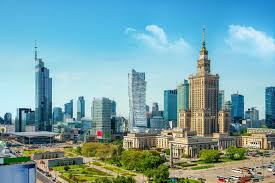
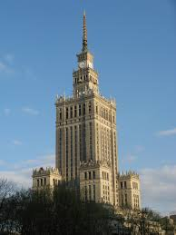
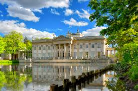
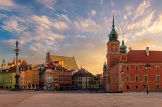

Warszawa to stolica i największe miasto Polski, położone nad rzeką Wisła. Miasto ma długą i ciekawą historię, a wiele budynków zostało zniszczonych podczas II wojna światowa i później odbudowanych. Szczególnie znane jest Stare Miasto w Warszawie, które zostało starannie odtworzone po wojnie. Jednym z najbardziej charakterystycznych budynków w mieście jest Pałac Kultury i Nauki. Dziś Warszawa jest ważnym centrum kultury, nauki i gospodarki w Polsce.

Pałac Kultury i Nauki znajduje się w centrum Warszawy. Został zbudowany w 1955 roku. Jest jednym z najwyższych i najbardziej znanych budynków w Polsce. W środku znajdują się teatry, kina, muzea i sale konferencyjne. Z tarasu widokowego można zobaczyć panoramę całej Warszawy.

Łazienki Królewskie to jeden z najpiękniejszych parków w Warszawie. Znajduje się tam słynny Pałac na Wyspie. Park powstał w XVIII wieku za panowania Stanisława Augusta Poniatowskiego. W Łazienkach można spacerować, odpoczywać i podziwiać przyrodę. To bardzo popularne miejsce wśród mieszkańców i turystów.

Stare Miasto w Warszawie to najstarsza część Warszawy. Znajduje się tam piękny Rynek Starego Miasta w Warszawie. W czasie II wojny światowej Stare Miasto zostało prawie całkowicie zniszczone. Po wojnie zostało odbudowane bardzo dokładnie. Dziś jest to popularne miejsce spacerów i spotkań turystów.